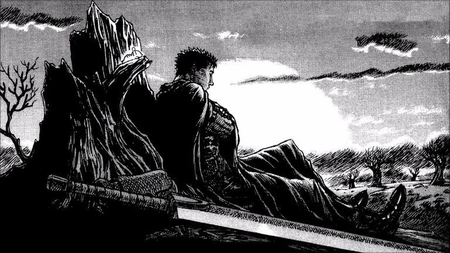

Berkserk is a manga series written and illustrated by Kentaro Miura. It is set in a medieval fantasy world, and tells the story of Guts, a lone mercenary, and Griffith, the leader of a mercenary band called the Band of the Hawk. The story is characterized by its graphic violence and depiction of psychological trauma. The series is noted for its epic scope, dark fantasy themes, and artistic features such as decapitations and dismemberments.
Kentaro Miura was born on April 6, 1972 in Tokyo, Japan. He is a Japanese manga artist and writer. He is best known for his manga Berserk, which has been serialized in Young Animal since 1989. Berserk is his only ongoing series. He has also written and illustrated several one-shot manga, including the horror manga Helter Skelter and the science fiction manga Gungrave. He has also worked as an assistant to other manga artists, including Nobuhiro Watsuki and Yoshihiro Togashi.
Berserk is a dark fantasy series that deals with themes of existentialism, trauma, and mass death. The series is noted for its epic scope, dark fantasy themes, and artistic features such as decapitations and dismemberments. The series is also known for its graphic violence and depiction of psychological trauma. The series is set in a medieval fantasy world, and tells the story of Guts, a lone mercenary, and Griffith, the leader of a mercenary band called the Band of the Hawk. The story is characterized by its graphic violence and depiction of psychological trauma. The series is noted for its epic scope, dark fantasy themes, and artistic features such as decapitations and dismemberments.

Guts, the renowned "Black Swordsman," is the main protagonist of this story, and he probably has one of the edgiest back stories of
any character ever written. Guts was born from the womb of his deceased mother who was hung from a tree. He was left in a pool
of blood and filth to die alone. Sometime after, a band of mercenaries, led by one Gambino, happens upon Guts. Gambino believes
Guts is dead before Guts begins crying. Immediately a woman named Shisu takes to him, despite his birth being considered ominous
by her allies. Three years later, Shisu contracts the plague and dies as Guts watches, helplessly. Afterward, Guts and Gambino
develop a relationship that sees Guts begin honing his swordsmanship skills at a very early age, officially joining the mercenary
band at just nine years old. Gambino secretly blames Guts for Shisu's death, and all the bad fortunes he and the mercenaries deal
with (including when Gambino lost his leg in one of the battles), and one night, Gambino attempts to kill Guts in a drunken rage.
Guts is then forced to kill Gambino in self-defense, and is then promptly chased out of the mercenary band. Guts then wanders the
world alone, and eventually meets Griffith, the leader of the Band of the Hawk, and the two become fast friends.
I won't delve into the rest of Guts' story for spoiler reasons, and also because in my opinion, experiencing the emotions and events that he goes
through is a much better way to truly appreicate and understand his dynamic and standoffish personality.
Guts is a very complex character, and his story is one of the most tragic in all of fiction. Miura has done a fantastic job of creating
scenarios and problems for Guts to overcome that aren't just the classic trope "oh no, I'm in a fight, I better win."
Griffith, the leader of the Band of the Hawk. We rarely see Griffith's true self, as he is always wearing a sort of mask that hides his true emotions. Griffith is an extremely driven and passionate character who believes heavily in the dreams of people. He is a very calm and composed individual, and knows that it takes more than just brute force to achieve his goals. He is a very charismatic leader, and is able to rally his troops to follow him to the ends of the earth.